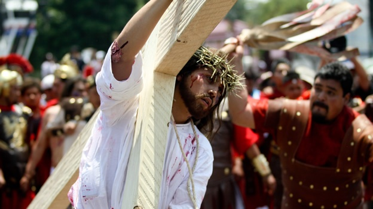

SEMANA SANTA

Semana Santa, conocida como semana mayor, es un período de 7 días que comienza con el Domingo de Ramos y culmina con el Domingo de Resurrección. Con la Semana Santa, el cristiano conmemora el Triduo Pascual, es decir, los momentos de la Pasión, la Muerte y la Resurrección de Jesucristo.
La Semana Santa está precedida por la Cuaresma que se refiere al tiempo de preparación donde se recuerda los 40 días de Jesucristo en el desierto. Las celebraciones centrales de la Semana Santa son: Jueves Santo, Viernes Santo, Sábado Santo y Domingo de Resurrección.

A continuación se muestra una breve descripción de cada día:
Como tal, el Jueves Santo celebra la última cena de Jesús de Nazaret con sus discípulos, la institución de la eucaristía, la orden sacerdotal y, el lavatorio de pies. En este día, los católicos realizan la visita de los siete templos o iglesias, con el objetivo de agradecer a Dios el don de la eucaristía y sacerdocio.
El Viernes Santo, recuerda la Pasión de Cristo, momento de su crucifixión en el Calvario, por salvar al hombre del pecado y darle vida entera. Se celebra con un viacrucis y con la adoración de la Cruz.
Se conoce como Sábado Santo el día entre la muerte y la resurrección de Jesús. En este día, se lleva a cabo una vigilia pascual, en la cual se acostumbra bendecir el agua y encender las velas en señal de la Resurrección de Jesús.
El Domingo Santo, conocido como Domingo de Pascua. En el Domingo Santo, se conmemora la resurrección de Jesucristo al tercer día después de su crucifixión y, su primera aparición a los discípulos. Este día es de suma alegría para los fieles y, es interpretado como la esperanza de una nueva vida.

Pascua es la celebración más importante de la Iglesia Cristiana, donde se conmemora la Resurrección de Jesucristo al tercer día después de haber sido crucificado, según los evangelios canónicos.La Pascua forma parte de la Semana Santa donde en el "Viernes Santo" se celebra la crucifixión de Jesús, y en el "Domingo de Pascua" se celebra la Resurrección y su primera aparición a sus discípulos.
El "Domingo de Pascua" es una fiesta móvil, el día varía cada año y no se fija en relación al calendario civil, y sucede después de la primera luna llena en el inicio de la primavera en el hemisferio Norte. La Pascua siempre se celebra entre el 22 de Marzo y el 25 de Abril, se celebra en varios países y en cada uno posee un nombre diferente, como por ejemplo: los portugueses la llaman Páscoa, los italianos la llaman Pasqua, y los franceses Pâques
Uno de los símbolos de la Pascua es el conejo. Este animal se convirtió en un símbolo porque en la antigüedad, en el hemisferio Norte, la celebración fue precisamente a finales del invierno y principios de la primavera, cuando los animales aparecían en los campos con sus cachorros, era la época de la fertilidad.
El huevo también es un símbolo de la Pascua, representa el inicio de la vida. En varios países se regalan huevos de chocolate a los amigos, deseándoles un buen paso hacia una vida feliz.
Probablemente usted habrá notado que la fecha de la Semana Santa varía considerablemente de un año al siguiente. Esta fecha se escoge a partir de una fórmula establecida por el Emperador Romano Constantino el Grande y el Concilio de Nicea en 325 d. C. Usted puede usar la fórmula para verificar la fecha de Pascua cada año.
En primer lugar debe hallar el equinocio vernal, o primer día de primavera ( alrededor del 21- 22 de marzo ), en un calendario que incluya datos astronómicos básicos. Después busque la siguiente luna llena, normalmente está indicada en una esquina del calendario. La Semana Santa caerá el domingo siguiente.
De acuerdo con esta regla, la fecha más tardía posible para Semana Santa sería el 25 de Abril, la próxima ocurrencia será en 2038. La más temprana el 22 de Marzo, en 2285.
La conmemoración de Semana Santa en el municipio de Atlixco destaca principalmente por 2 eventos: el recorrido de los engrillados y la procesión del silencio; ambos logran atraer a miles de visitantes año tras año debido a que son actividades únicas en su tipo.
Los engrillados son hombres que para pagar una penitencia o agradecer un milagro, recorren más de 3 kilómetros de calles del municipio, en su camino deben ir descalzos, cargando en sus hombros cadenas de más de 100 kilos, con espinas incrustadas en su cuerpo, vistiendo únicamente una capucha y un calzoncilllo negros.
Aunado a lo anterior, lo único que pueden consumir durante su marcha son limones, para mantenerse hidratados, mientras que algunas personas les acomodan las cadenas, o por segundos, les ayudan con el peso de éstas.
Cada penitente lleva en sus manos una charola en la que quienes atestiguan el acto colocan monedas, al final del día, ese dinero es donado a la iglesia.
Otro de los atractivos del municipio de Atlixco durante Semana Santa es la procesión del silencio que se ha llevado a cabo desde hace 20 años.
Esta procesión considerada una de las más grandes del estado espera reunir a más de 10 mil personas a lo largo de su recorrido de más de 8 kilómetros. La reunión comienza en la junta auxiliar de Santa Lucía Cosamaloapan y termina en la colonia de Nexatengo, cargando en su mayoría por jóvenes, las imágenes de Jesús de Nazaret, Jesús Crucificado y La Dolorosa.
Los que participan cargando las imágenes deben haberse confesado, los hombres van vestidos de negro y las mujeres con falda morada y blusa blanca.
Los Festejos de Semana Santa de Iztapalapa son Patrimonio Cultural Intangible de la Ciudad de México. Desde hace 172 años, millones de mexicanos y turistas extranjeros han rememorado en el Cerro de la Estrella de Iztapalapa, la pasión de Cristo, la historia de cómo el hijo de Dios sufrió por el perdón de los pecados de la humanidad.
Desde 1843 en el Cerro de la Estrella o Huizachtepetl se conmemora la Pasión de Cristo. Diez años atrás, en 1833, los pobladores afectados y preocupados por la epidemia que azolaba a su comunidad, invocaron las imágenes de Cristo que se veneraban en sus respectivas ermitas de los barrios originales de Iztapalapa para que terminara la ola de muerte que se cernía entre sus familiares. A los pocos días, según cuenta la historia, la mortandad por el cólera cesó. Además del milagro de haber parado la epidemia, en San Lorenzo, uno de los pueblos de Iztapalapa, el Cristo invocado los favoreció con un agua milagrosa, pues del pie de un ahuehuete brotó un manantial y con el agua que de ahí emanó curaron a los enfermos y a la gente de los pueblos del sur
La representación del Vía Crucis en Iztapalapa comienza con el Domingo de Ramos, con la bendición de las Palmas en la Parroquia de San Lucas, y la Entrada Triunfal de Jesús de Nazaret a Jerusalén, en el santuario del Señor de la Cuevita. El jueves Santo: se celebra la procesión por las principales calles emulando la visita a las Siete Casas, que en este caso es a los ocho barrios; la última cena; el lavatorio en el Jardín Cuitláhuac; la Oración en el Huerto de los Olivos y la Aprehensión, en el Cerro de la Estrella. El Viernes Santo día de la Tragedia Litúrgica: El Juicio: Presentación del Nazareno ante Poncio Pilatos; los clarines anuncian que El Redentor ha sido condenado: Azotes y Coronación se escenifican en la explanada del Jardín Cuitláhuac.
Acto seguido, inicia el Vía Crucis rumbo al Gólgota (Cerro de la Estrella): en este trayecto se representan las tres caídas, la primera en la calle de Ayuntamiento (calle de Cuauhtémoc) las otras dos en la Calle de Hidalgo y Estrella, se escenifican los demás pasos al Calvario. Cientos de Nazarenos que también llevan a cuestas su cruz y corona de espinas, centuriones, soldados romanos y heraldos abren paso al Mecías acompañado por sus discípulos, vírgenes y samaritanos; detrás los clarines y una banda tocan la Marcha Dragona. Crucifixión con los villanos Dimas y Gestas, la presencia de Judas en la horca; a las tres de la tarde, da fin esta representación de la Pasión y muerte del Hijo del Hombre en el Cerro de la Estrella en Iztapalapa.
Roma es el principal destino italiano para conmemorar la semana de Pascua sobre todo debido a los eventos que tienen lugar en el Vaticano.
La Semana de Pascua comienza el Domingo de Ramos, con la misa especial que encabeza el Papa en la Plaza de San Pedro. Este evento suele ser muy concurrido y muchas veces es difícil de conseguir un lugar. Si deseas asistir a la misa del Domingo de Ramos lo mejor es llegar temprano.
La Bendición de los ramos, procesión y Santa Misa del Domingo de Ramos tiene lugar por la mañana, por lo general a partir de las 09:30, en la Plaza de San Pedro.
El Jueves Santo se celebra una Misa en la Basílica de San Pedro, por lo general a las 9:30 AM. El Viernes Santo la misa papal tiene lugar en la Basílica de San Pedro a las 17:00 horas. Por la noche se realiza el Vía Crucis, cerca el Coliseo de Roma, a partir de las 21:15.Las estaciones del viacrucis se colocaron en el Coliseo en 1744 por el Papa Benedicto XIV. Se trata de una procesión muy emotiva y popular. Miles de creyentes y turistas asistirán a este evento.
La Misa Papal y vigilia de Pascua se celebran en el Sábado Santo a las 21:00 horas en la Basílica de San Pedro. Al mediodía, el Papa emite el mensaje de Pascua y la bendición en el balcón central de la Basílica de San Pedro.
El Domingo de Pascua también se celebra una Misa Papal en San Pedro y luego los romanos católicos acostumbran ir a sus casas y continuar la cuaresma, la cual se levanta el lunes. Este día suele más jovial que los solemnes eventos anteriores.El lunes muchos italianos se vuelcan a los parques y es muy habitual verlos celebrar en familia realizando un picnic. Finalmente en Castel Sant'Angelo en la ciudad del Vaticano, un enorme despliegue de fuegos artificiales sobre el río Tíber concluyen las conmemoraciones de Semana Santa con la quema de los judas.
Oficialmente, Semana Santa comienza al conmemorarse la entrada de Jesús en Jerusalén el Domingo de Ramos (1 de abril), con la misa matinal de las 8 en la Iglesia del Santo Sepulcro y la tradicional procesión de Palmas durante la tarde. Más tarde, a las 14.30, miles de cristianos de todo el mundo marcharán jubilosamente desde Betfagé, rezando y cantando en todos los idiomas, descendiendo por la ladera occidental del Monte de los Olivos en camino a la Ciudad Vieja, a través del valle de Kidrón.
El Jueves Santo, el Patriarca Latino de Jerusalén celebrará a las 8 de la mañana la Institución de la Eucaristía en el Santo Sepulcro y por la tarde, a las 15.30, los Franciscanos efectuarán su peregrinación tradicional al Cenáculo (la Sala Superior) en el Monte Sion. Por la noche, a partir de las 21 horas, peregrinos y cristianos locales velarán con Jesucristo durante una hora sagrada de meditación en el Huerto de Getsemaní, seguida de una procesión a la luz de velas a la iglesia de San Pedro en Gallicantu, que según la tradición es el lugar en el que Jesús pasó la noche después de ser arrestado.
En Viernes Santo, a las 8 de la mañana, se conmemorarán la Pasión del Señor y la crucifixión en el Calvario, seguidas del Vía Crucis en la Vía Dolorosa a las 11.30, liderado por el Custos (Custodio) franciscano de Tierra Santa. Posteriormente, a las 8.10 de la mañana, se celebrará el funeral de Cristo en el Sepulcro, un evento exclusivo de la Iglesia de Jerusalén, que reconstruye la deposición del cuerpo de Cristo en la tumba.
La tan esperada Vigilia Pascual, el punto culminante de la semana, se celebrará el sábado a las 7.30 de la mañana en la Basílica de la Resurrección, seguida de la entrada solemne del Patriarca a las 15.30 y e oficios religiosos vespertinos a las 18 horas.
El Domingo de Resurrección, se celebrará una misa a las 8 de la mañana, con una procesión alrededor de la tumba de Jesús y la procesión diaria, que tendrá lugar a las 17 horas.
Ayacucho se llena de color, tradición popular, fervor religioso, música, redención y luces. Destacan sus 33 iglesias y casonas coloniales, sus tradiciones tanto como su folclore. Cuando se inicia la Semana Santa, la ciudad se moviliza para participar en procesiones, ceremonias, ferias gastronómicas, actividades culturales y artísticas. Toda la comunidad participa del evento y llegan visitantes de todas las partes del Perú y del mundo; ya que es considerada la segunda ciudad importante después de Sevilla (España) para realizar esta festividad religiosa.
Semana Santa en Ayacucho, forma parte de la tradición en Perú. Se realiza un sincretismo mágico, donde se incorpora el mundo andino con su magia y tradiciones en conjunción con la religiosidad católica.
Es la festividad más importante de la región ayacuchana y una de las más sobresalientes de América Latina. La celebración se inicia con la procesión del Señor de la Agonía, la Virgen Dolorosa, la Verónica y San Juan
Sábado de pasión, se realiza la escenificación de la pasión de Cristo y se reparten las palmas de forma gratuita al público asistente.
Domingo de Ramos, sale el Cristo en un burro, las llamas llevan retama seca que será quemada el Domingo de resurreción. El Lunes sale la procesión el Señor del huerto, el martes el Señor de la Sentencia, miércoles se representa el encuentro entre Cristo, su madre y María Magdalena y el jueves se visitan las iglesias.
El viernes Santo la procesión del santo Selpulcro y el sábado de gloria, es la pascua y se celebra la festividad en todo su esplendor. La feria llega a su máximo en el Cerrito de Acuchimay.
Domingo de Resurrección, la procesión más importante. Llevan al Cristo en andas, iluminado por velas y se quema la retama. Mientras la gente baila y canta alrededor en la plaza. Además uno de los platos más celebrados es la patasca o patashca acompañado de unas chaplas.